二维码原理以及生成
二维码
一、简介
又称二维条码，它是用特定的几何图形按一定规律在平面（二维方向）上分布的黑白相间的图形。相比一维的条码，二维码能够在横向和纵向两个方位同时表达信息，因此能在很小的面积内表达大量的信息，同时可以有较高的容错能力。最初在1994年由日本DENSO WAVE公司腾弘原团队发明，后来DENSO WAVE 公司宣布，不行使本公司就标准QR码拥有的专利权(专利第2938338号)，目前，QR码已经在国家标准和国际标准中实现标准化，任何人都可以随意查看该标准。
1.1 二维码分类
-
堆叠式/行排式二维条码
其编码原理是建立在一维条码基础之上，按需要堆积成二行或多行。它在编码设计、校验原理、识读方式等方面继承了一维条码的一些特点，但由于行数的增加，需要对行进行判定，其译码算法不完全相同于一维条码。有代表性的行排式二维条码有：Code 16K、Code 49、PDF417、MicroPDF417 等。
-
矩阵式二维码
最流行的就是QR CODE ,我们常说的二维码大多数都是他。在矩阵相应元素位置上，用点（方点、圆点或其他形状）的出现表示二进制“1”，点的不出现表示二进制的“0”，点的排列组合确定了矩阵式二维条码所代表的意义。矩阵式二维条码是建立在计算机图像处理技术、组合编码原理等基础上的一种新型图形符号自动识读处理码制。具有代表性的矩阵式二维条码有：Code One、MaxiCode、QR Code、 Data Matrix、Han Xin Code、Grid Matrix 等。
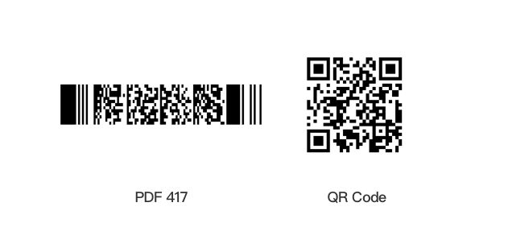
QRCode官网：www.qrcode.com
1.2 二维码的特点
-
存储大容量信息
传统条形码最多只能支持20位左右的信息，二维码则最多可以支持7089个数字，4296个字母，1817个汉字。
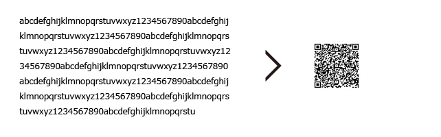
-
小空间内打印
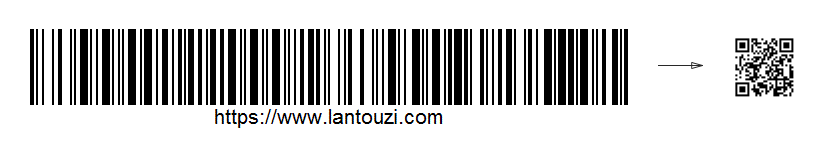
-
有效表现各种字母
QR码是日本国产的二维码，因此更适合处理日文字母和汉字。QR码字集规格定义是按照日本标准“JIS第一级和第二级的汉字”制定的，因此在日语处理方面，每一个全角字母和汉字都用13比特的数据处理，效率较高，与其他二维码相比，可以多存储20%以上的信息。
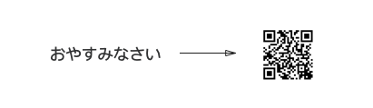
-
抗破损能力强
QR码具备“纠错功能”，即使部分编码变脏或破损，也可以恢复数据。数据恢复以码字为单位（是组成内部数据的单位，在QR码的情况下，每8比特代表1码字），最多可以纠错约30%（根据变脏和破损程度的不同，也存在无法恢复的情况）。

-
任意方向识别
QR码从360°任一方向均可快速读取。原因在于QR码中的3处定位图案，可以帮助QR码不受背景样式的影响，实现快速稳定的读取。
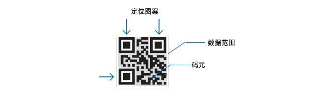
-
支持数据合并功能
QR码可以将数据分割为多个编码，最多支持16个QR码。使用这一功能，还可以在狭长区域内打印QR码。另外，也可以把多个分割编码合并为单个数据。
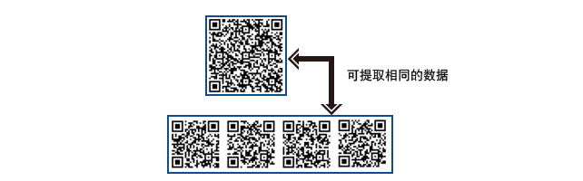
1.3二维码的版本与纠错能力
1.3.1二维码版本
二维码一共有40个尺寸，官方叫版本Version。Version 1是21 x 21的矩阵，Version 2是 25 x 25的矩阵，Version 3是29的尺寸，每增加一个version，就会增加4的尺寸，公式是：(V-1)4 + 21（V是版本号） 最高Version 40，(40-1)4+21 = 177，所以最高是177 x 177 的正方形。
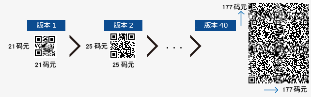
1.3.2 二维码纠错能力
QR码具有“纠错功能”。即使编码变脏或破损，也可自动恢复数据。这一“纠错能力”具备4个级别，用户可根据使用环境选择相应的级别。调高级别，纠错能力也相应提高，但由于数据量会随之增加，编码尺寸也也会变大。 用户应综合考虑使用环境、编码尺寸等因素后选择相应的级别。 在工厂等容易沾染赃物的环境下，可以选择级别Q或H，在不那么脏的环境下，且数据量较多的时候，也可以选择级别L。一般情况下用户大多选择级别M(15%)。
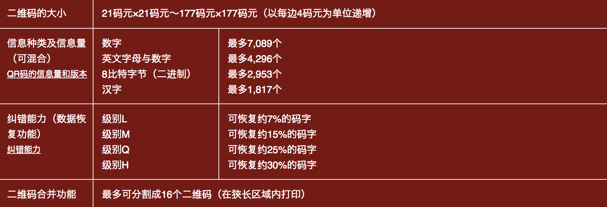
- 纠错使用RS编码
RS编码，又称里所码，即Reed-solomon codes，是一种前向纠错的信道编码，对由校正过采样数据所产生的多项式有效。当接收器正确的收到足够的点后，它就可以恢复原来的多项式，即使接收到的多项式上有很多点被噪声干扰失真。
1.3.3 二维码尺寸选择
QR码的各个版本结合数据量、字符类型和纠错级别，均设有相对应的最多输入字符数。也就是说，如果增加数据量，则需要使用更多的码元来组成QR码，QR码就会变得更大。
例如，需要输入的数据为100位的数字时，通过以下步骤来选定。 1．假设要输入的数据种类为“数字” 。 2．从“L”、 “M”、 “Q”、 “H”中选择纠错级别。（假设选择“M”） 3．查看下表，先从数字列找出数字为100以上且接近100的，其次找出纠错级别“M”，两者交叉的部分就是最佳版本。
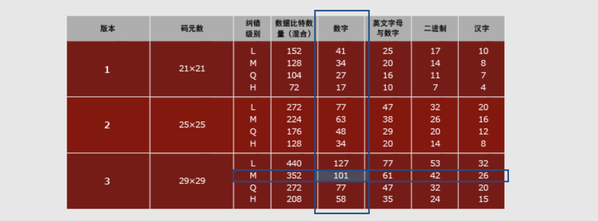
1.4 二维码的构成

- 位置探测图形、位置探测图形分隔符、定位图形：
用于对二维码的定位，对每个QR码来说，位置都是固定存在的，只是大小规格会有所差异； 这三个定位图案有白边即位置探测图形分隔符，之所以三个而不是四个，因为三个就可以标识一个矩形了。
- 校正图形
规格确定，校正图形的数量和位置也就确定了，Version 2以上（包括Version2）的二维码才需要这个。
- 格式信息
表示该二维码的纠错级别，分为L、M、Q、H，存在于所有的尺寸中，用于存放一些格式化数据的。
- 版本信息
即二维码的规格，QR码符号共有40种规格的矩阵（一般为黑白色），从21x21（版本1），到177x177（版本40），每一版本符号比前一版本 每边增加4个模块。在 >= Version 7以上，需要预留两块3 x 6的区域存放一些版本信息。
- 数据和纠错码字
实际保存的二维码信息，和纠错码字（用于修正二维码损坏带来的错误）。
二、二维码的生成过程
2.1编码过程
2.1.1编码类型
QR码支持数字编码、字符编码、字节编码、日文编码、特殊字符编码、混合编码等。
- 数字编码
从0到9。如果需要编码的数字的个数不是3的倍数，那么，最后剩下的1或2位数会被转成4或7bits，则其它的每3位数字会被编成 10，12，14bits，编成多长还要看二维码的尺寸。
- 字符编码
包括 0-9，大写的A到Z（没有小写），以及符号$ % * + – . / : 包括空格。这些字符会映射成一个字符索引表。如下所示：（其中的SP是空格，Char是字符，Value是其索引值） 编码的过程是把字符两两分组，然后转成下表的45进制，然后转成11bits的二进制，如果最后有一个落单的，那就转成6bits的二进制。而编码模式和字符的个数需要根据不同的Version尺寸编成9, 11或13个二进制（如下表中Table 3）


2.1.2字符编码示例：
- 一、生成数据码
在Version 1的尺寸下，纠错级别为H的情况下，编码: AC-42
- 从字符索引表中找到 AC-42 这五个字条的索引 (10,12,41,4,2)
- 两两分组: (10,12) (41,4) (2)
- 把每一组转成11bits的二进制:
(10,12) 10x45+12 等于 462 转成 00111001110 (41,4) 41x45+4 等于 1849 转成 11100111001 (2) 等于 2 转成 000010
把这些二进制连接起来：00111001110 11100111001 000010
把字符的个数转成二进制 (Version 1-H为9 bits ): 5个字符，5转成 000000101
在头上加上编码标识 0010 和第5步的个数编码: 0010 000000101 00111001110 11100111001 000010
添加结束符0000
8bits重排，如果所有的编码加起来不是8个倍数我们还要在后面加上足够的0，比如上面一共有78个bits，所以，我们还要加上2个0，然后按8个bits分好组 00100000 00101001 11001110 11100111 00100001 00000000
补齐码，最后，如果如果还没有达到我们最大的bits数的限制，我们还要加一些补齐码（Padding Bytes），Padding Bytes就是重复下面的两个bytes：11101100 00010001 关于每一个Version的每一种纠错级别的最大Bits限制，可以参看[QR Code Spec]的第28页到32页的Table-7一表。
按照最低21*21H级别纠错规格72个bits,一共需要9组 还差三个，补齐后即可得到数据码：00100000 00101001 11001110 11100111 00100001 00000000 11101100 00010001 11101100
上面的编码就是数据码了，叫Data Codewords，每一个8bits叫一个codeword，我们还要对这些数据码加上纠错信息。
- 二、通过数据码生成纠错码
首先，我们需要对数据码进行分组，也就是分成不同的Block，然后对各个Block进行纠错编码，对于如何分组，我们可以查看[QR Code Spec]的第33页到44页的Table-13到Table-22的定义表。注意最后两列：
- Number of Error Code Correction Blocks ：需要分多少个块
- Error Correction Code Per Blocks：每一个块中的code个数，所谓的code的个数，也就是有多少个8bits的字节。
例如：上述的Version 5 + Q纠错级：需要4个Blocks（2个Blocks为一组，共两组），头一组的两个Blocks中各15个bits数据 + 各 9个bits的纠错码（注：表中的codewords就是一个8bits的byte）
下图给一个5-Q的示例（因为二进制写起来会让表格太大，所以，我都用了十进制，我们可以看到每一块的纠错码有18个codewords，也就是18个8bits的二进制数）
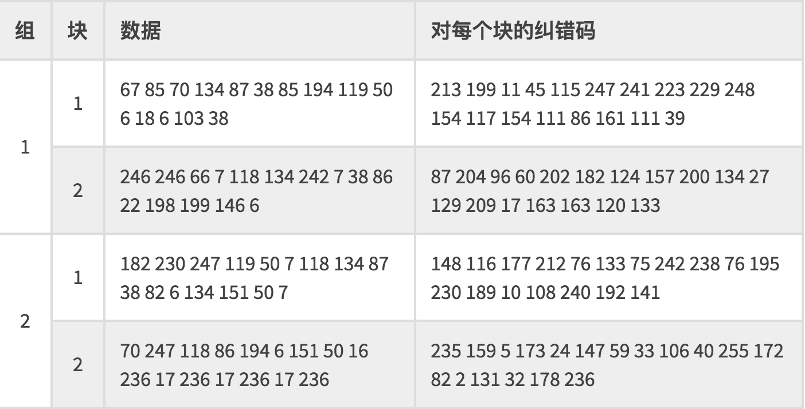
注：二维码的纠错码主要是通过Reed-Solomon error correction（里德-所罗门纠错算法）来实现的。
可参考：https://blog.csdn.net/liubin1991liubin/article/details/78989043

- 三、最终编码
二维码的混乱技术还没有玩完，它还要把数据码和纠错码的各个codewords交替放在一起。如何交替呢，规则如下：
对于数据码：把每个块的第一个codewords先拿出来按顺度排列好，然后再取第一块的第二个，如此类推。假如我们用HELLO WORLD的字符串的数据码：
00100000 01011011 00001011 01111000 11010001 01110010 11011100 01001101 01000011 01000000 11101100 00010001 11101100
Data Codewords如下：
块 1 67 85 70 134 87 38 85 194 119 50 6 18 6 103 38 块 2 246 246 66 7 118 134 242 7 38 86 22 198 199 146 6 块 3 182 230 247 119 50 7 118 134 87 38 82 6 134 151 50 7 块 4 70 247 118 86 194 6 151 50 16 236 17 236 17 236 17 236 先竖再横向：67， 246， 182， 70， 85，246，230 ，247 ……… ……… ，38，6，50，17，7，236
对于纠错码，也是一样：
块 1 213 199 11 45 115 247 241 223 229 248 154 117 154 111 86 161 111 39 块 2 87 204 96 60 202 182 124 157 200 134 27 129 209 17 163 163 120 133 块 3 148 116 177 212 76 133 75 242 238 76 195 230 189 10 108 240 192 141 块 4 235 159 5 173 24 147 59 33 106 40 255 172 82 2 131 32 178 236 和数据码取的一样，得到：213，87，148，235，199，204，116，159，…… …… 39，133，141，236
然后，再把这两组放在一起（纠错码放在数据码之后）得到：
67, 246, 182, 70, 85, 246, 230, 247, 70, 66, 247, 118, 134, 7, 119, 86, 87, 118, 50, 194, 38, 134, 7, 6, 85, 242, 118, 151, 194, 7, 134, 50, 119, 38, 87, 16, 50, 86, 38, 236, 6, 22, 82, 17, 18, 198, 6, 236, 6, 199, 134, 17, 103, 146, 151, 236, 38, 6, 50, 17, 7, 236, 213, 87, 148, 235, 199, 204, 116, 159, 11, 96, 177, 5, 45, 60, 212, 173, 115, 202, 76, 24, 247, 182, 133, 147, 241, 124, 75, 59, 223, 157, 242, 33, 229, 200, 238, 106, 248, 134, 76, 40, 154, 27, 195, 255, 117, 129, 230, 172, 154, 209, 189, 82, 111, 17, 10, 2, 86, 163, 108, 131, 161, 163, 240, 32, 111, 120, 192, 178, 39, 133, 141, 236
这就是我们的数据区。
2.2 绘制二维码
先看之前这个图
-
一、添加位置探测图形
首先，先把位置探测图形图案画在三个角上。（无论Version如何，这个图案的尺寸就是这么大7*7）

- 二、绘制校正图形（ 5*5）

关于Alignment的位置，可以查看[QR Code Spec]的第81页的Table-E.1的定义表（下表是不完全表格）

下图是根据上述表格中的Version8的一个例子（6，24，42）
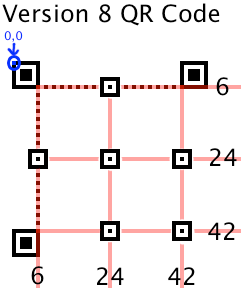
- 三、绘制定位图形
接下来是定位图形的线。
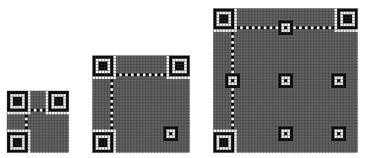
再接下来是格式信息，下图中的蓝色部分。

格式信息是一个15个bits的信息，每一个bit的位置如下图所示：（注意图中的Dark Module，会永远出现）

这15个bits中包括：
- 5个数据bits：其中，2个bits用于表示使用什么样的Error Correction Level， 3个bits表示使用什么样的Mask
- 10个纠错bits。主要通过BCH Code来计算
然后15个bits还要与101010000010010做XOR操作。这样就保证不会因为我们选用了00的纠错级别和000的Mask，从而造成全部为白色，这会增加我们的扫描器的图像识别的困难。

错误级别：

-
四、添加版本信息
（版本7以后需要这个编码），下图中的蓝色部分。

版本信息 一共是18个bits，其中包括6个bits的版本号以及12个bits的纠错码，下面是一个示例

而其填充位置如下图：
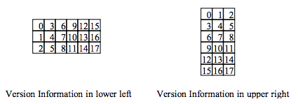
- 五、绘制数据和数据纠错码
然后是填接我们的最终编码，最终编码的填充方式如下：从左下角开始沿着红线填我们的各个bits，1是黑色，0是白色。如果遇到了上面的非数据区，则绕开或跳过。

- 六、转换为掩码图案
这样下来，我们的图就填好了，但是，也许那些点并不均衡，如果出现大面积的空白或黑块，会告诉我们扫描识别的困难。所以，我们还要做Masking操作,QR的Spec中说了,QR有8个Mask你可以使用，如下所示：其中，各个mask的公式在各个图下面。所谓mask，就是和上面生成的图做XOR操作。Mask只会和数据区进行XOR，不会影响功能区。（注：选择一个合适的Mask也是有算法的）

其Mask的标识码如下所示：（其中的i,j分别对应于上图的x,y）

下面是Mask后的一些样子，我们可以看到被某些Mask XOR了的数据变得比较零散了。

Mask过后的二维码就成最终的图了。